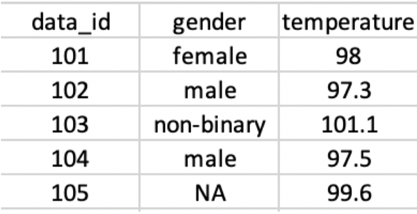

library(tibble)
library(dplyr)
library(tidyr)PHW251 Problem Set 2
Question 1
In this question you will create a data frame. Below is code for how to do this:
# data frame with three columns and three rows
# notice how we start with the column name and then the row values
# each column, in this example, has three values
df_example <- data.frame("column_1" = 1:3,
"column_2" = c("string_1", "string_2", "2"),
# here we add an NA value due to missing data
"column_3" = c(NA, "string_3", 50))
df_example column_1 column_2 column_3
1 1 string_1 <NA>
2 2 string_2 string_3
3 3 2 50Now you try! Create a data frame with three columns and the following values:
Column 1: ID
- 1, 2, 3
Column 2: NAME
- “Pam”, “Jim”, “Dwight”
Column 3: AGE
- 40, NA, 48
office_df <-
data.frame(
"ID" = as.integer(1:3),
"NAME" = c("Pam", "Jim", "Dwight"),
"AGE" = as.numeric(c(40, NA, 48))
)
office_df ID NAME AGE
1 1 Pam 40
2 2 Jim NA
3 3 Dwight 48Question 2
With your new data frame created in the previous question, find the following values:
length
typeof
class
length(office_df)[1] 3typeof(office_df)[1] "list"class(office_df)[1] "data.frame"Question 3
Create a data frame and a tibble that matches the image below:
# by the way, you can load images into rmarkdown! Cool, right?!
# here we use the knitr library (though there are multiple ways to load images)
#library(knitr)
# notice that we specify the path to look within the current directory
# by using the period: .
# followed by a slash: / to pull the image file
#knitr::include_graphics('table_replicate.png')
#########################################
# I used this inline from quarto instead:
# {width=60%}
#########################################
q3_df <-
data.frame(
"data_id" = as.integer(101:105),
"gender" = as.factor(c("female", "male", "non-binary", "male", "NA")),
"temperature" = as.numeric(c(98, 97.3, 101.1, 97.5, 99.6))
)
q3_df data_id gender temperature
1 101 female 98.0
2 102 male 97.3
3 103 non-binary 101.1
4 104 male 97.5
5 105 NA 99.6q3_tibble <-
tibble(
"data_id" = as.integer(101:105),
"gender" = as.factor(c("female", "male", "non-binary", "male", "NA")),
"temperature" = as.numeric(c(98, 97.3, 101.1, 97.5, 99.6))
)
q3_tibble# A tibble: 5 × 3
data_id gender temperature
<int> <fct> <dbl>
1 101 female 98
2 102 male 97.3
3 103 non-binary 101.
4 104 male 97.5
5 105 NA 99.6Question 4
What are the key differences between data frames and tibbles?
In a nutshell, tibbles are data frames, but with more modern default behaviors - sometimes making the rules a bit more stringent when it makes sense (like always returning a tibble when subsetting a tibble), and in other times giving them more flexibility (like allowing you to use spaces in column names).
Tibble comes from the tidyverse, which essentially took the core R data frame and made some changes for improving flexibility, wrangling datasets, and readability:
Highlights from lecture:
tibbles to do automatically assign row names as data frames will
tibbles allow you to have spaces in column names (dataframes do not). However, it’s really not a best practice to use spaces in column names, and they are generally only useful if you’re trying to export a “clean” table for a report or something.
tibbles allow you to asign a vector of length 1 by automatically assigning the value to all rows. In a dataframe, it will usually spit you out an error along the lines of: “…vector length must be a length of X or Y, not 1…”
tibbles have simpler and more streamlined ways of referencing columns. In the core dataframe, you have to subset with brackets and/or use the
df$col_name. Sometimes the default behavior of a dataframe will simplify to another format like a vector. Tibble will never do that - it will always give you a tibble in return which is really nice and avoids confusion.tibble improved readibility for console outputs: it defaults to only showing the first 10 rows. In a dataframe, it will usually print out a large number of rows, unless you go a step further and use the
head(df, 10)function. But this is just built-into tibble as a default for simplicity
Why are tibbles preferable?
Tibbles are touted as simpler, more consistent, more predictable, safer, more user-friendly, data frames.
Tidyverse is the ruler of data management in R - so there’s advantage to using it simply for the sake of all other R coders being able to easily understand and reproduce your code.
Admittedly, I don’t use them as much as I should. Like R itself, my default behaviors were “hard-coded” many years ago and dataframes have been my go-to. I appreciate this question as it helped me understand the many benefits of tibbles (and why I should make them my default instead of dataframes, unless I truly need a data frame for a certain reason).
Question 5
We just found out results for COVID testing and want to add it to our data. Using the tibble you created in Question 3, add the following test results to a new column called “results”.
- 101 = NEGATIVE
- 102 = POSITIVE
- 103 = NEGATIVE
- 104 = NEGATIVE
- 105 = NEGATIVE
q3_tibble <- q3_tibble %>%
mutate(
results = as.factor(c("NEGATIVE", "POSITIVE", rep("NEGATIVE", 3)))
)
q3_tibble # A tibble: 5 × 4
data_id gender temperature results
<int> <fct> <dbl> <fct>
1 101 female 98 NEGATIVE
2 102 male 97.3 POSITIVE
3 103 non-binary 101. NEGATIVE
4 104 male 97.5 NEGATIVE
5 105 NA 99.6 NEGATIVEQuestion 6
You find out there was an error in data collection and subject 102’s temperature is actually 98.3, not 97.3. Correct the value in your data frame.
q3_tibble <- q3_tibble %>%
mutate(
temperature = if_else(data_id == 102, 98.3, temperature)
)
q3_tibble # A tibble: 5 × 4
data_id gender temperature results
<int> <fct> <dbl> <fct>
1 101 female 98 NEGATIVE
2 102 male 98.3 POSITIVE
3 103 non-binary 101. NEGATIVE
4 104 male 97.5 NEGATIVE
5 105 NA 99.6 NEGATIVEQuestion 7
Load the “stds-by-disease-county-year-sex.csv” data set, which is in the data folder.
You can find more information about this data set from the California Open Data Portal:
https://data.ca.gov/dataset/stds-in-california-by-disease-county-year-and-sex
std_df <-
read.csv(
file = "../data/stds-by-disease-county-year-sex.csv",
header = TRUE,
skip = 3,
na.strings = ""
)You may have noticed that there are empty cells in the first three rows. Modify your code above (if you haven’t already) to remove these rows.
Question 8
Let’s explore this STD data set. Use code to find the values requested below. Insert R chunks as needed.
How many rows?
nrow(std_df)[1] 9558How many columns?
ncol(std_df)[1] 6What are the column names?
colnames(std_df)[1] "Disease" "County" "Year" "Sex" "Cases"
[6] "Population"What are the column types?
str(std_df)'data.frame': 9558 obs. of 6 variables:
$ Disease : chr "Chlamydia" "Chlamydia" "Chlamydia" "Chlamydia" ...
$ County : chr "California" "California" "California" "California" ...
$ Year : int 2001 2001 2001 2002 2002 2002 2003 2003 2003 2004 ...
$ Sex : chr "Female" "Male" "Total" "Female" ...
$ Cases : int 75941 24885 101590 81583 28521 110759 85153 31007 116385 89438 ...
$ Population: int 17339700 17173042 34512742 17554666 17383624 34938290 17782868 17606060 35388928 17968347 ...Question 9
You want to dig deeper into the data and focus on the years 2015 - 2018. Use the which() function to index which rows fit this year range and assign the results to a new data frame. To check whether this was done correctly you should expect the following dimensions: 2124 rows x 6 columns
std_filtered_base <- std_df[which(std_df$Year >= 2015 & std_df$Year <= 2018), ]
# prefer dplyr filter() if possible:
std_filtered <- std_df %>%
filter(Year >= 2015 & Year <= 2018)
summary(std_filtered) Disease County Year Sex
Length:2124 Length:2124 Min. :2015 Length:2124
Class :character Class :character 1st Qu.:2016 Class :character
Mode :character Mode :character Median :2016 Mode :character
Mean :2016
3rd Qu.:2017
Max. :2018
Cases Population
Min. : 0 Min. : 557
1st Qu.: 26 1st Qu.: 30184
Median : 141 Median : 132770
Mean : 2412 Mean : 891753
3rd Qu.: 772 3rd Qu.: 442039
Max. :232181 Max. :39825181
NA's :200 Question 10
Your colleague is interested in this data set but hasn’t setup their git repository. They ask you to help them out by exporting this new data set as a .csv file. Place your output in the /data folder.
As a test, you can try to read in the .csv you created to make sure everything looks correct.
write.csv(std_filtered, "../data/std_filtered.csv", row.names = FALSE)
check <- read.csv(file = "../data/std_filtered.csv", header = TRUE)Question 11
Look up how to use the unique() function and run it on the County column of the STD data set. You should see a total of 59 counties.
unique(std_df$County) [1] "California" "Alameda" "Alpine" "Amador"
[5] "Butte" "Calaveras" "Colusa" "Contra Costa"
[9] "Del Norte" "El Dorado" "Fresno" "Glenn"
[13] "Humboldt" "Imperial" "Inyo" "Kern"
[17] "Kings" "Lake" "Lassen" "Los Angeles"
[21] "Madera" "Marin" "Mariposa" "Mendocino"
[25] "Merced" "Modoc" "Mono" "Monterey"
[29] "Napa" "Nevada" "Orange" "Placer"
[33] "Plumas" "Riverside" "Sacramento" "San Benito"
[37] "San Bernardino" "San Diego" "San Francisco" "San Joaquin"
[41] "San Luis Obispo" "San Mateo" "Santa Barbara" "Santa Clara"
[45] "Santa Cruz" "Shasta" "Sierra" "Siskiyou"
[49] "Solano" "Sonoma" "Stanislaus" "Sutter"
[53] "Tehama" "Trinity" "Tulare" "Tuolumne"
[57] "Ventura" "Yolo" "Yuba" You decide to focus on one county. Subset your data for one county of your choice.
yolo_cnty <- std_df %>%
filter(County == "Yolo")
unique(yolo_cnty$County)[1] "Yolo"Question 12
You’re very interested in finding the rate of cases per 100,000 population. In your subset data frame (from the previous question), create a new column called “rate” with the calculated values.
Rate = (Cases / Population) * 100,000
Hint: R allows you to use manipulate variables within a data frame to calculate new values so long as the rows and data types match up. For example: df$var3 <- df$var1 + df$var2
yolo_cnty <- yolo_cnty %>%
mutate(
Rate = (Cases / Population) * 100000
)
head(yolo_cnty, 10) Disease County Year Sex Cases Population Rate
1 Chlamydia Yolo 2001 Female 227 89655 253.19279
2 Chlamydia Yolo 2001 Male 57 85447 66.70802
3 Chlamydia Yolo 2001 Total 287 175102 163.90447
4 Chlamydia Yolo 2002 Female 280 91782 305.07071
5 Chlamydia Yolo 2002 Male 69 87489 78.86706
6 Chlamydia Yolo 2002 Total 354 179271 197.46641
7 Chlamydia Yolo 2003 Female 310 93337 332.12981
8 Chlamydia Yolo 2003 Male 66 88994 74.16230
9 Chlamydia Yolo 2003 Total 380 182331 208.41217
10 Chlamydia Yolo 2004 Female 335 95101 352.25707Question 13
You see a classmate post the comment below in an Ed Discussion.
I can’t get my file to import right:
rm(list = ls())
# step 1 find file
# step 2 get file into r folder
# step 3 check with classmate
co2 <- read_csv(file = “co2_mm_mlo.csv”, skip = 51, header = TRUE, row.names = NULL)
Write a response to the poster and include at least three specific suggestions for them to include to make their response fit guidelines for repeatable examples.
Hi classmate,
Could you send the error or messages you’re getting in R? That would make it much easier to pinpoint where your issue is coming from.
In the meantime, here are a few things I would try:
1. The easiest fix might be simply changing your read_csv to read.csv :
# your code:
## co2 <- read_csv(file = "co2_mm_mlo.csv", skip = 51, header = TRUE, row.names = NULL)
# change read_csv to read.csv :
co2 <- read.csv(file = "co2_mm_mlo.csv", skip = 51, header = TRUE, row.names = NULL)2. The next easiest fix might be that the file name in your code does not match exactly what you save it as in your folder
For example, let’s say in your file folder:
- the file is actually named: “co2_mauna_mlo.csv”
but in the code, you’re telling R that it’s named: “co2_mm_mlo.csv” :
co2 <- read.csv(file = "co2_mm_mlo.csv", skip = 51, header = TRUE, row.names = NULL)If that’s the case, you’d see an error like this:
Important
Warning in file(file, “rt”) : cannot open file ‘co2_mm_mlo.csv’: No such file or directory Error in file(file, “rt”) : cannot open the connection
So all you’d have to do is update the code to make sure the names match exactly:
co2 <- read.csv(file = "co2_mauna_mlo.csv", skip = 51, header = TRUE, row.names = NULL)If all that still fails…
… and you have:
- tried changing
read_csvto:read.csv - you are certain the name of the file in your code matches exactly how it’s saved in your folder
And you still get an error like this:
Important
Warning in file(file, “rt”) : cannot open file ‘co2_mm_mlo.csv’: No such file or directory Error in file(file, “rt”) : cannot open the connection
My next guess is that either:
(a) your current “working directory” is not set to the right spot, or
(b) the .csv file you’re trying to pull in is located in a different folder
(a) What is your current working directory set to?
“working directory” is just fancy talk for ‘folder’
So, what folder are you working out of?
Or more accurately would be to ask: what folder is R currently working out of?
To answer that: Run getwd() and R will tell you where it’s brain is currently located:
The output I get below will look different that yours, since it’s specific to my local computer, but hopefully it will give you a location you recognize and can make sense of:
getwd()[1] "C:/Users/stace/GitHub Repositories/PHW251_R/problem_set_3"Is that the same folder your current .qmd file is saved in?
If not - make sure your working directory is set to the “problem_set_2” folder (or whatever folder you are working out of and saving your files to)
The easiest way I have found to do that is to open the .qmd for the problem set you’re working on, right-click on the .qmd file’s tab at the top of your Rstudio window, and click “Set Working Directory.”
It will print the code it ran in the console, it should look something along the lines of:
setwd(“C:/Users/yourusername/your_project_folder/problem_set_2”)
You can also set your working folder manually by running that code in R directly, and making changes as needed.
tip for you here: once you’re in a recognizable location, you can hit the “Tab” button on your keyboard and R will give you drop-down options to choose from.
This is my location for the folder I worked out of for problem set 2:
setwd("C:/Users/stace/GitHub Repositories/PHW251_R/problem_set_2/")Again, this is specific to my own computer, so yours will look different, but the concept is the exact same.
If you’re working out of the right folder, next question is:
(b) Is the .csv file saved in that same folder?
If you click on the “Files” tab in the bottom right window of your RStudio screen, you should see it listed there, along with your .qmd file.
If you don’t see it in the folder, the easiest option is to just move it there.
Otherwise…
If you are storing all the data files in a separate folder somewhere, let’s say one level up from where your problem_set_2 folder is, you can keep it there and pull it in using:
” ../ ” before the name of the folder.
Translating that code to normal speak, we are saying to R:
“go one folder up from where we are now, then you’ll see a folder called data, and there’s a .csv file in that data folder called: co2_mm_mlo.csv. Bring that in here.”
co2 <- read.csv(file = "../data/co2_mm_mlo.csv", skip = 51, header = TRUE, row.names = NULL)